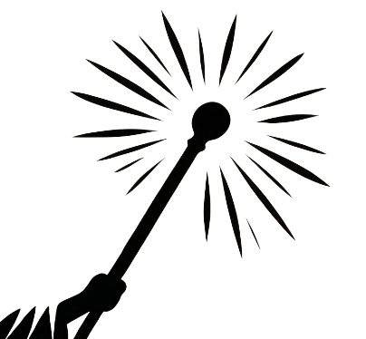
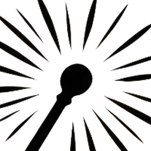

ArcaneDesk
✦
DM 的 AI 副驾驶。给我一个 Foundry 地址,我会自己打开面板、登录并读取世界;战斗中每步动作都有四态回执。
也可以直接点顶栏的「面板」指示灯手动开关右侧主视觉。

ArcaneDesk新会话与当前会话都会立即切换。
配置 Arcane Spark，或添加您已有的模型服务商。API Key 仅保存在本机。
已知模型的 (vision) 后缀会自动带出(内置能力表,实测校准);拉取/模板填充后仍可手改。
语音识别使用 GLM-ASR-2512。可使用 Arcane Spark 现有接入,也可填写自己的智谱 API Key(智谱直连当前 ¥0.06/分钟);单句最长 30 秒。识别结果会插入输入框,检查后按 Enter 发送。
按住快捷键说话,松开识别。
按下快捷键开始说话,再按一下结束说话。
prompt 是识别上下文,默认内置 D&D 跑团语境;热词默认内置 D&D 词表。两者都可直接增改,保存即生效。快捷键点击录入(支持修饰键组合),× 清除 = 不绑定,保存后立即生效。
切换立即生效;「跟随系统」会在每次启动时按系统语言重新选择。
发送功能类别、耗时区间、调用次数与成功/错误信号，帮助我们判断该优先改什么。
这里只保存你选择“始终允许此地址”的权限。撤销后，网站下次实际使用该功能时会重新询问。